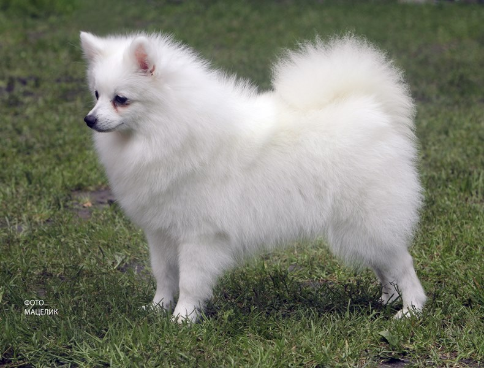

Limoncello Del Colle Degli Ulivi
Limoncello Del Colle Degli Ulivi COI: 3.125 %
COI: 12.5 %
 Geo
Geo Ines Del Colle Degli Ulivi Geo
Ines Del Colle Degli Ulivi Geo|
Дата рождения: 11.04.2012г.р Заводчик: Francini Roberto(Italia)
Владелец: Клитина Елена
Окрас: Белый
Пол: сука Титулы:
Юный Чемпион Мира (Венгрия-2013)
|
 |
| Limoncello Del Colle Degli Ulivi COI: 3.125 % |
Giove Del Colle Degli Ulivi | Tomax |
| Edda Del Colle Degli Ulici COI: 12.5 % |
||
| Dolly | Geo |
|
| Alba | ||
| Ines Del Colle Degli Ulivi |
Ilsuperbo | Pacorabanne |
| Etienne | ||
| Pilu | Geo |
|
| Bianchina |